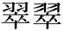
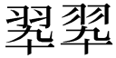

「玉『翠』会」の字体は『翠』か？『翆』か？
「玉翠会」の『翠』はパソコンで打つと、『翠』と『翆』の2種類がでてきます。「玉翠会」の字体としては、このうちどちらを使うべきなのでしょうか。
そこでまず、「翠」の字の変遷を調べてみました。
4種類あり得る字体
「翠」の字体は、「（羽＋卒）」が正字とされています。
ただ、翠の部首である「羽」の正字は「羽」ですが、手書きでは「羽」と書くことが多かったようであり（それゆえ、戦後の「当用漢字字体表」では「羽」の字体が採用されています。）、また、「卒」の略字として「卆」がよく使われることは周知のとおりです。
その結果、「翠」の字体としては次の4種類があり得ることになります。


もっとも、戦後の当用漢字表の制定以降も「翠」は当用漢字表外でしたので、どれが正しいかという問題は生じませんでした。
人名用漢字での取り扱い
ところが、「翠」は「みどり」と読むので、これを人名に使いたいという声が多かったのか、1976年(S51)、人名漢字に「（羽＋卒）」が採用されました。
さらに、1981年(S56)、人名漢字のうちいくつかの漢字の字体が変更され、「翠」の字体も「（羽＋卒）」から「翠（羽+卒）」に変更されました。
その結果、これ以降人名漢字として使えるのは「翠（羽＋卒）」の字体だけになったのです。
JIS漢字コードでの取り扱い
1978年(S53)、JIS漢字コードが定められ、「（羽＋卒）」は第一水準に、「翆（羽＋卆）」が第二水準に採用されました。
第一水準と第二水準に区別した理由は、当時コンピューターの能力が低かったため、よく使用する漢字を第一水準とし、製造するコンピューターが第一水準のみを搭載してもよいことにするためでした。
1983年、JIS漢字コードが改定され、その際、前述のように人名漢字の字体が「（羽＋卒）」から「翠（羽＋卒）」に変更されたことに合わせて、JIS漢字コードの字体も「（羽＋卒）」から「翠（羽＋卒）」になりました。
こうして、JIS漢字コードでは、第一水準が「翠（羽＋卒）」、第二水準が「翆（羽＋卆）」ということになり、現在のパソコンでもこの2種類の字体が引き継がれています。
玉翠会での取り扱い
「翠（羽＋卒）」と「翆（羽＋卆）」は異字体に過ぎないので、意味は同じです。
しかも、いずれも常用漢字として採用されていないため、どちらを使用するのが望ましいのかという関係にありません。
また、今日ではパソコンの性能が向上しているため、JIS漢字コードの第一水準と第二水準の区別は意味のないものとなっています。
それゆえ、一般論としては、「翠（羽＋卒）」と「翆（羽＋卆）」のどちらを使用しても間違いとはいえないと思います。
ただ、「翠（羽＋卒）」の字体だけが人名漢字として使用できるので、実際にはこちらを使うことが多いでしょう。
ところがここからが問題なのですが、平成25年発行の玉翠会会員名簿に掲載されている玉翠会会則をみると、『翠』はすべて「（羽＋卒）」の字体を使用しています（平成20年発行の名簿も同じです）。
通常のパソコンには「翠（羽＋卒）」と「翆（羽＋卆）」しかありませんから、玉翠会では、意識的に「（羽＋卒）」の字体を使用しているものと思われます。
おそらく、「玉翠会」の『翠』は「晩翠会」から取っており、「晩翠会」は「（羽＋卒）」の字体を使っていたので、それに合わせたのでしょう。
したがって、玉翠会という立場から考えると、「翠（羽＋卒）」も「翆（羽＋卆）」も間違いであり、「（羽＋卒）」のみが正しい表記ということになります。
ただ、「（羽＋卒）」の字はパソコンでは出て来ません。
それゆえ、「玉翠会」の「翠」の字体は、本来は「（羽＋卒）」であるが、パソコンで表記できないので、便宜上「翠（羽＋卒）」を借用しているということになるのでしょう。
ということで、何だかややこしい話になりました。
執筆者の個人的見解としては、玉翠会会則を改正して、字体を「翠（羽＋卒）」とするのが現実的であろうと思うのですが・・。
東京玉翠会での取り扱い
東京玉翠会の総会ブログラム第1回から第18回に掲載されている「東京玉翠会会則」の「翠」の字体は「（羽＋卒）」となっています。ところが、第19回総会プログラム以降は「翠（羽＋卒）」の字体を使用しています。
したがって、なし崩し的という感はありますが、「東京玉翠会」の正規の表記は「翠（羽＋卒）」ということになるでしょう。
参考文献
「戦後漢字史」阿辻哲次（新潮選書）
「異字体の世界」小池和夫（河出文庫）
「新しい常用漢字と人名用漢字」安岡孝一（三省堂）